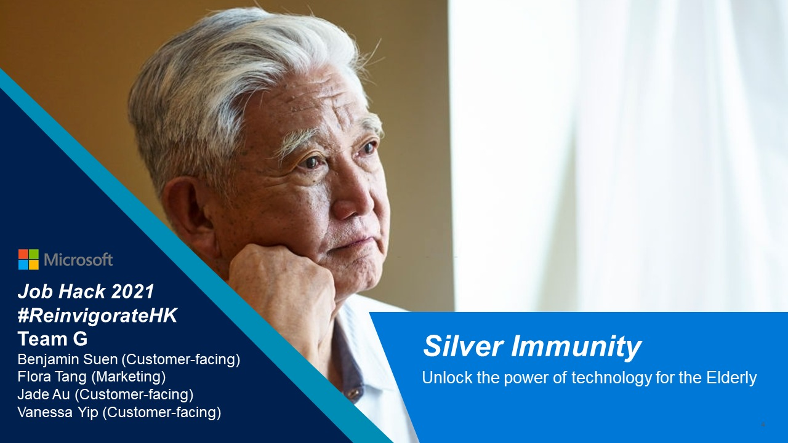
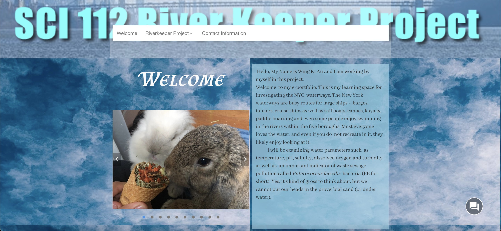

Silver Immunity
The project is combined AI technology, Speech Recognition, mobile application to build a programme to ensure elderly in Hong Kong can get assistance from NGO workers or individual volunteers. The project is demonstrated from two ends, the elderly side and the volunteers side. The elderly side will be using the AI technology and Speech Recognition Technology, to help the elderly to get help more easily and ensure the service is accessible to most of the elderly. On the volunteers side, the project includes a mobile application called Silver Immunity Portal, it provides variety of functions to help the volunteers deliver the assistance or services to the elderly more efficiently and easily.

Presentation:
https://drive.google.com/file/d/19cWUL4mZIBCPx05hXpby1nOldyxgbCnh/viewApplication:
https://apps.powerapps.com/play/010fcd32-362f-4de8-b68d-1d99c286040f?%20tenantId=196ce38a-232b-4dee-Demonstration:
https://drive.google.com/file/d/11WkqAN7v3IfdgrADQa8J72SxTzcpuT3y/viewHudson River Riverkeeper Project
This is a research project about the water quality of Hudson River, inlcuding how the city's drainage system affect animals living in the Hudson River, or dependant on the Hudson River, including human ourselves. This research paper includes all the lab results I have collected in the whole semester, as well as some additional information and experiment result I have conducted for this project.

ePortfolio:
https://johnjay.digication.com/au-wing-ki-sci-112-02-swenson/welcome-1-
Home
My Artwork
Do you know me?